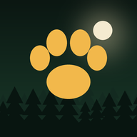

نتتبع أثر الأحداث في البر والبحر، يرويها كائن يعيش في قلبها، بالأرقام والمصادر.
تطورات البيئة والأزمات المرتبطة بها كما تصل، وتتحدث كل ساعتين.
أعطِ شهود خبراً، واختر من يرويه، أو دع الغابة تختار.
انسخ الطلب، والصقه في أي محادثة مع Claude، ثم الصق رده هنا.
اكتب المادة بنفسك. الحقول الفارغة لا تظهر في المادة.
المفتاح والمنطقة من صفحة «Keys and Endpoint» في خدمة Speech على Azure. يُحفظان في هذا المتصفح فقط.
يُحفظ في هذا المتصفح فقط. رصيده منفصل عن اشتراك Claude، والمادة الواحدة تكلّف سنتات قليلة.
بطاقة تعريف لكل كائن ظهر في مادة.
أطلس شهود البيئي
الأزمات البيئية الجارية على كوكب واحد: الحروب والأزمات الكبرى، وشهاداتنا، وإنذارات الكوارث الحية، والمحميات. أدِر الكرة واضغط أي نقطة.
ما تنتجه منصة شهود.
هذا الدليل لك وحدك: يظهر في نسخة Claude وفي غرفة التحرير المستقلة، ولا يظهر في الموقع العام. اضغط أي عنوان لتفتحه.
| النسخة | رابطها | لماذا أستعملها |
|---|---|---|
| نسخة Claude | claude.ai/artifact/TLB9MVnF… | القلب: فيها أزرار Claude (كتابة القطع، الرصد، المزامنة) وقاعدة البيانات الأصلية. الضغط على أزرارها يستهلك من رصيدك. |
| غرفة التحرير المستقلة | alshuhud.org/newsroom.html | تعمل بلا Claude وبلا رصيد، بمفتاح GitHub المحفوظ في متصفحك: نشر قطعة يدوياً، صور، ميديا، تعديل، حسابات وشركاء. تبقى تعمل حتى لو توقف اشتراك Claude. |
| الموقع العام | alshuhud.org | ما يراه القرّاء وGoogle: بلا أدوات ولا غرفة تحرير. لكل قطعة صفحة برابط قصير مثل alshuhud.org/p/turtle-campania. |
| يستهلك من رصيدك | مجاني تماماً |
|---|---|
| «✨ اكتب قطع اليوم» (الأكبر) «🔍 ارصد الآن» «↻ زامن النسخة المستقلة» الحديث معي في المحادثة (ومنه البحث عن الصور) «✨ أكمل البطاقة» و«✍️ اكتب بلسانه» في بطاقات الكائنات |
زيارة الموقع وتصفحه كل ما تفعله في غرفة التحرير المستقلة (نشر يدوي، صور، ميديا، تعديل، حذف) الرصد التلقائي من الوكالات كل ساعة (برنامج GitHub) بناء صفحات القطع والروابط القصيرة وخريطة Google تصدير البطاقات والفيديو من الاستوديو |
القاعدة المتفق عليها: لا شيء يعمل بـClaude تلقائياً. كل تشغيل بضغطة منك فقط.
| أريد أن… | أين | كيف |
|---|---|---|
| أحوّل خبراً عندي إلى قطعة | نسخة Claude ← غرفة التحرير | الصق الخبر والمصدر ← «اقرأ الأزمة بعين الكائن» ← راجع وعدّل ← «انشر في النشرة» ← «زامن» |
| نفس الشيء من الموقع (المستقلة) | alshuhud.org/newsroom.html ← غرفة التحرير | الصق الخبر والمصدر ← «📨 أرسلها إلى Claude ليكتبها» فتُكتب أولاً في جولة «اكتب قطع اليوم» التالية. أو «📋 عبر محادثة Claude»: زر ١ ثم الصق وأرسل في Claude، وانسخ الرد، ثم زر ٢ |
| أنشر قطعة كتبتها بنفسي | غرفة التحرير | «✍️ اكتب يدوياً»، املأ الحقول ثم «انشر في النشرة» (مجاني) |
| أضيف صورة لقطعة | أي نسخة داخلية | افتح القطعة ← «📷 صورة». صورة الحدث تملأ الإطار، والراوي يظهر في الدائرة |
| أصحّح نصاً أو رقماً | أي نسخة داخلية | افتح القطعة ← «✏️ تعديل» ← «حفظ» |
| أضيف بطاقات أو فيديو | المستقلة ← ميديا | «＋ أضف مادة»، أو من الاستوديو بزر التصدير داخل القطعة |
| أضيف حساب تواصل | أسفل الصفحة ← «تابعونا» | «＋ أضف حساباً» واختر المنصة والرابط |
| أضيف شريكاً | من نحن ← شركاؤنا | زر الإضافة تحت القسم |
| المشكلة | الحل |
|---|---|
| عدّلت شيئاً ولا يظهر في الموقع | انتظر 5 دقائق، ثم حدّث الصفحة تحديثاً كاملاً: Ctrl+Shift+R (في الماك Cmd+Shift+R). في الهاتف أغلق الصفحة وافتحها. |
| قطع Claude الجديدة ليست في الموقع | لم تُضغط «زامن» بعد. اضغطها في نسخة Claude. |
| زر Claude لا يعمل («الزر لا يعمل في هذا التطبيق») | افتح نسخة Claude من متصفح الكمبيوتر لا من تطبيق الهاتف، أو اكتب الطلب لي في المحادثة. |
| ضغطت «اكتب قطع اليوم» ولم يظهر شيء | الكتابة تأخذ 10 إلى 15 دقيقة. حدّث بعدها. إن مرّت 30 دقيقة بلا شيء فاسألني في المحادثة. |
| قطعة بلا صورة (رسم الحيوان فقط) | لم يُعثر على صورة للراوي. أضف صورة بزر «📷 صورة»، أو اطلب مني البحث. |
| الرصد لا يتحدث | البرنامج المجاني يعمل كل ساعة. إن توقف يوماً كاملاً فأخبرني. |
| شيء غريب في التصميم أو زر اختفى | صوّر الشاشة وأرسلها لي في المحادثة. |
تذكير: المحادثة تستهلك من رصيدك، فاجمع طلباتك في رسالة واحدة حين تستطيع.
كائنات مهددة بالانقراض.
التصنيفات من القائمة الحمراء IUCN.
نحن لا نقرأ الصحف. نقرأ الماء حين يجف، والسماء حين تحترق، والأرض حين ترتجف قبل أن تشعروا بها. هؤلاء مراسلونا.